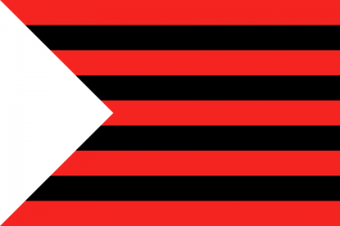

Simbolurile orașului
-
Drapelul
Drapelul municipiului Ungheni reprezintă o pânză dreptunghiulară (3×2 m), fasciată în nouă brâie, roşii şi negre alternând, încărcată la hampă cu un triunghi alb (isoscel, cu înălţimea de 1/3 din lungimea pânzei drapelului).Câmpul scutului, vărgat în nouă vergi, alternând roşu şi negru, reprezintă cele nouă localităţi care au constituit municipiul Ungheni: oraşul Ungheni şi satele Dănuţeni, Deleşti, Ciureşti, Găureni, Bereşti, Mânzăteştii Vechi, Bălteni, Gărdeşti. negru – simbolizează pământul roşu – simbolizează sângele și semnifică destinul dramatic al localităţilor riverane Prutului.
-
Stema
Stema mare a municipiului Ungheni reprezintă un câmp vărgat în nouă vergi, roşu şi negru alternând, un căprior de argint, însoţit în cantonul scutului de o cheie de aur răsturnată. Scutul este timbrat de o coloană murală de aur cu cinci turnuri. Suporţi – doi cai de argint. Pe o eşarfă de aur e scris cu litere negre sloganul: VIRTUS ET AETERNITAS (Virtute şi eternitate).
-
Semnificații
Căpriorul de argint simbolizează râul Prut și se referă la etimologia numelui aşezării: “Unghiul de pe Prut”. Cheia de aur este preluată din prima stemă a oraşului, stemă creată în epoca sovietică. Această cheie marca importanţa strategică a urbei în calitatea sa de “poartă feroviară” cândva a Imperiului Rus, apoi a URSS.Coroana murală de aur cu cinci turnuri, care simbolizează scutul, arată poziţia localităţii în ierarhia oraşelor Republicii Moldova, statutul de municipiu – reşedinţă de raion. Suporţii scutului – cei doi cai de argint – întruchipează cele două districte istorice, din care a făcut parte localitatea: ţinutul medieval moldovenesc Iaşi, apoi judeţul basarabean Iaşi-Bălţi, din epocile modernă şi contemporană, ambele având pe stemele lor cabaline, pentru cunoaşterea meritului deosebit pe care l-a avut cândva acest animal în viaţa localnicilor. Calul este, în acelaşi timp, un simbol al măreţiei şi al aspiraţiei spre libertate şi virtute. Sloganul VIRTUS ET AETERNITAS (Virtute şi eternitate) exprimă caracterul şi aspiraţiile unghenenilor, tendinţa spre conservare a valorilor spirituale şi materiale tradiționale, care stau la baza oricărui viitor.